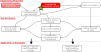

Recap
-
We learned a brief history of the pioneers of soil mechanics.
- We learned that soil is disintegrated rock. The process of disintegration is called weathering.
-
We learned about different soil deposits including: alluvial, coastal, marine, lacustrine, glacial, eolian, colluvial, and residual soils.

Contents
- Soil phases
- Density and unit weight
- Phase diagram
- Volume and weight relations
Objectives covered in this lecture
- [O1]: Develop an understanding of soil phase relations, index properties, and their application to soil classification and compaction
After this lecture we will be able to:
- Calculate the bulk, dry, saturated, and buoyant unit weight of soil.
- Calculate water content and the saturation ratio.
- Calculate void ratio and porosity of soils.
Unit systems
| Dimension | SI | Imperial | Conversion factor |
|---|---|---|---|
| Length | cm/m | in/ft | 0.394/3.281 |
| Mass | kg | slug | 0.0685 |
| Force | N | lb | 0.225 |
| Gravity | 9.81 m/\(\text{s}^2\) | 32.17 ft/\(\text{s}^2\) | - |
| Unit weight of water | 9.81 kN/\(\text{m}^3\) | 62.4 pcf | - |
Density and unit weight
| Variable | Definition | Formula |
|---|---|---|
| Density (\(\rho\)) | Ratio of (\(m\)) to the (\(V\)) it occupies. | \(\rho=m/V\) |
| Unit weight (\(\gamma\)) | Ratio of (\(W\)) to (\(V\)) it occupies. | \(\gamma=W/V\) |
| Specific gravity (\(G_s\)) | Ratio of (\(\rho\)) to the (\(\rho_w\)). | \(G_s=\rho/\rho_w\) |
Note: Weight is mass times gravity. Therefore, unit weight \(\gamma\) is related to density \(\rho\) by the equation:
\( \gamma= g \rho \)
Specific gravity of common minerals
| Mineral | Formula | \(G_s\) |
|---|---|---|
| Calcite | CaCO\(_3\) | 2.71 |
| Feldspar | - | 2.6 |
| Hematite | Fe\(_2\)O\(_3\) | 5.2 |
| Kaolinite | Al\(_2\)Si\(_2\)O\(_5\)(OH)\(_4\) | 2.61-2.66 |
| Mica | - | 2.9 |
| Quartz | SiO\(_2\) | 2.65 |
What are the most common minerals in sand?

Assuming \(G_s=2.65\) is not far away from reality!
Soil phases
Soils are a collection of particles () and . The voids in a soil can be filled with .

A soil with .
A soil with .
A soil without .
Let's simplify the complexity of the assembly by constructing a

From the previous slide we can construct our first relationships:
Similarly for the total volume:
With the equal to:
\( W_t=W_s+ W_w \)
Similarly for the total volume:
\( V_t=V_s+V_w+V_a=V_s+V_v \)
With the equal to:
\( V_v=V_w+V_a \)
Measuring water content
| Variable | Definition | Equation |
|---|---|---|
| Gravimetric water content \(w\) | Ratio of the weight of to the weight of solids | \( w[\%]= \frac{W_w}{W_s} \times 100 \) |
| Volumetric water content \(\Theta\) | Ratio of the volume of to the total volume | \( \Theta=\frac{V_w}{V_t} \) |
| Saturation ratio\(S_r\) | Ratio of the volume of to the volume of | \( S_r=\frac{V_w}{V_v} \) |
Participation question 2.1
What is the saturation of a fully saturated soil?
- 25%
- 0%
- 100%
- 50%
Measuring porosity
| Variable | Definition | Equation |
|---|---|---|
| Void ratio \(e\) | Ratio of volume of to volume of | \( e=V_v/V_s \) |
| Porosity \(n\) | Ratio of volume of to | \( n= V_v/V_t \) |
| Solid fraction \(c\) | Ratio of volume of to | \( c= V_s/V_t \) |
Note: All these variables are related to each other, since they measure the same thing: Voids!
Example 2.1
Show that \(n=e/(1+e)\).
Start with definition of porosity
\(n=\)
Invert the equation
\(\cfrac{1}{n}=\)
Decompose total volume:
\(\cfrac{1}{n}=\)
Use the definition of void ratio
\(\cfrac{1}{n}=\)
take the reciprocal on both sides
\(n=\) \(\implies \ e= \)
Unit weight of soils
| Variable | Definition | Unit weight | Density |
|---|---|---|---|
| Total unit weight/density (\(\gamma_t\))/ (\(\rho_t\)) | Ratio of to | \( \gamma_t=W_t/V_t \) | \(\rho_t= m_t/V_t \) |
| Dry unit weight/density (\(\gamma_d\))/ (\(\rho_d\)) | Ratio of to | \( \gamma_d=W_s/V_t \) | \(\rho_d= m_s/V_t \) |
| Saturated unit weight/density (\(\gamma_{sat}\))/ (\(\rho_{sat}\)) | Unit weight/density when \(S=100\%\) or \(V_v=V_w\) | \( \gamma_{sat}=W_{sat}/V_t \) | \(\rho_{sat}= m_{sat}/V_t \) |
| Buoyant unit weight/density (\(\gamma'\))/ (\(\rho'\)) | Also known as or | \( \gamma'=\gamma_{sat}-\gamma_w \) | \(\rho'=\rho_{sat}-\rho_w \) |
Use this table to validate your calculations!
| Soil type | \(\gamma_{sat}\) | \(\gamma_d\) | \(\gamma'\) | |||
|---|---|---|---|---|---|---|
| kN/m3 | pcf | kN/m3 | pcf | kN/m3 | pcf | |
| Sands and gravels | 19-24 | 119-150 | 15-23 | 94-144 | 9-14 | 62-81 |
| Silts and clay | 14-21 | 87-131 | 6-18 | 37-112 | 4-11 | 25-69 |
| Glacial tills | 21-24 | 131-150 | 17-23 | 106-144 | 11-14 | 69-87 |
| Crushed rock | 19-22 | 119-137 | 15-20 | 94-125 | 9-12 | 56-75 |
| Peats | 10-11 | 60-69 | 1-3 | 6-19 | 0-1 | 0-6 |
| Organics silt and clay | 13-18 | 81-112 | 5-15 | 31-94 | 3-8 | 19-50 |
Example 2.2
Unit weight is the connector between the and the . Using phase diagrams find an expression for the total unit weight \(\gamma_t\) and show that \(S e= w G_s\).

Set the volume of solids
Take \(V_s=\)
Rule 4 of steps
Fill the volume column
| Phase | From the definitions | Volume |
|---|---|---|
| Solids | chosen in step 1 | \(V_s=1\) |
| Voids | \(V_v=e\,V_s\) | \(=\) |
| Water | \(V_w=S\,V_v\) | \(=\) |
| Air | \(V_a=V_v-V_w\) | = |
| Total | \(V_t=V_s+V_v\) | \(=\) |
Cross over to the weight column
\(W_s=\gamma_s V_s=\Gs\gw V_s=\)
\(\Gs\gw\) is the unit weight of the solids, not of the
bulk granular assembly
Weight of water, then total weight
\(W_w=\gw V_w=\) , so
\(W_t=W_s+W_w=\)
Total unit weight
\(\gamma_t=\dfrac{W_t}{V_t}=\)
If \(S=0\) (dry), , and if \(S=1\) (saturated),
If \(S=0\) (dry), , and if \(S=1\) (saturated),
Water content, off the same diagram
\(w=\dfrac{W_w}{W_s}=\)
\(=\dfrac{Se}{\Gs}\), so
The same \(\gamma_t\), written in terms of \(w\)
Substituting \(Se=w\Gs\) into step 5 gives the form to use when \(w\) is measured
and \(S\) is not: \(\gamma_t=\)
Useful relationships
For unit weight:
\(\gamma_t=\cfrac{\gamma_w (G_s+S e)}{1+e} \)
\(\gamma_d=\cfrac{\gamma_w G_s}{1+e} \)
\(\gamma_{sat}=\cfrac{\gamma_w (G_s+ e)}{1+e} \)
\( \gamma_t=\gamma_d (1+w[-])\)
Relationship between saturation, void ratio, specific gravity, and water content:
\( S e= w G_s \)
Useful to remember: structural engineers are wacky guys 😂
Useful steps to solve phase relationship problems
- List known information in terms of elementary masses and volumes:
For example \(e= V_v/V_s=0.6\) instead of \(e=0.6\) - Draw a phase diagram
- It is always okay to set \(\rho_w=1000\) kg/m3 or \(\gamma_w= 9.81\) kN/m3
- The values of the individual phase ratios (e.g., densities, volume ratios, and mass ratios) are independent of the size of the soil sample. Therefore, it is always okay to fix a value of any single mass or volume if (and only if) no mass or volume is given
- Fill in one side of the diagram until you get stuck or completely solve it, then "cross over" the other side of the phase diagram using one of the densities or the specific gravity
- Validate your answer. You can use tables of typical soil properties to do this.
Example 2.3
In the natural state, a moist soil has a volume of 0.0093 m3 and weighs 177.6 N. The oven dry weight of the soil is 153.6 N. If \(G_s=2.71\), calculate: (1) Gravimetric water content, (2) Total unit weight, (3) Void ratio and porosity, (4) Saturation ratio.
Weight of water
\(W_w=W_t-W_s=\) \(=\)
\(\unit{N}\)
"Oven dry weight" is the weight of the solids because all the
water is gone
Gravimetric water content
\(w=\dfrac{W_w}{W_s}=\) \(=\)
%
Divide by the weight of solids, never the total weight, which
is why \(w> 100\%\)
Total unit weight
\(\gamma_t=\dfrac{W_t}{V_t}=\)
\(=\) \(\unit{N/m^3}=\)
\(\unit{kN/m^3}\)
Cross over to volumes
\(V_s=\dfrac{W_s}{\Gs\gw}=\)
\(=\)
\(\unit{m^3}\)
Volume of voids
\(V_v=V_t-V_s=\) \(=\)
\(\unit{m^3}\)
Keep \(V_s\) to four significant figures: \(V_v\) is a small
difference of two similar numbers.
Void ratio and porosity
\(e=\dfrac{V_v}{V_s}=\)
\(=\)
\(n=\dfrac{e}{1+e}=\) \(=\) % Same \(V_v\) in both, only the denominator changes, \(V_s\) for \(e\) and \(V_t\) for \(n\).
\(n=\dfrac{e}{1+e}=\) \(=\) % Same \(V_v\) in both, only the denominator changes, \(V_s\) for \(e\) and \(V_t\) for \(n\).
Volume of water
\(V_w=\dfrac{W_w}{\gw}=\) \(=\)
\(\unit{m^3}\)
Saturation ratio
\(S=\dfrac{V_w}{V_v}=\)
\(=\) %
Validate
The identity proved in Example 2.2 has to hold on real data:
\(Se=\) and
\(w\Gs=\) . ✓
A check worth doing!
Example 2.4
The void ratio of a clay is 0.5 and the saturation ratio is 70%. Assuming the density of solids is 2750 kg/m 3, calculate: (1) The water content, (2) The dry unit weight, and (3) The total unit weight.
Specific gravity of the solids
\(\Gs=\dfrac{\rho_s}{\rho_w}=\)
\(=\)
Water content
From \(Se=w\Gs\) (Example 2.2), \(w=\dfrac{Se}{\Gs}=\)
\(=\)
%
Dry unit weight
\(\gd=\dfrac{\Gs\gw}{1+e}=\) \(=\)
\(\unit{N/m^3}=\)
\(\unit{kN/m^3}\)
Total unit weight
\(\gamma_t=\cfrac{\gw(G_s+Se)}{1+e}=\) \(=\)
\(\unit{N/m^3}=\)
\(\unit{kN/m^3}\)
Validate
Both unit weights land at the dense end of the silt-and-clay band in the
typical-values table. Validated.